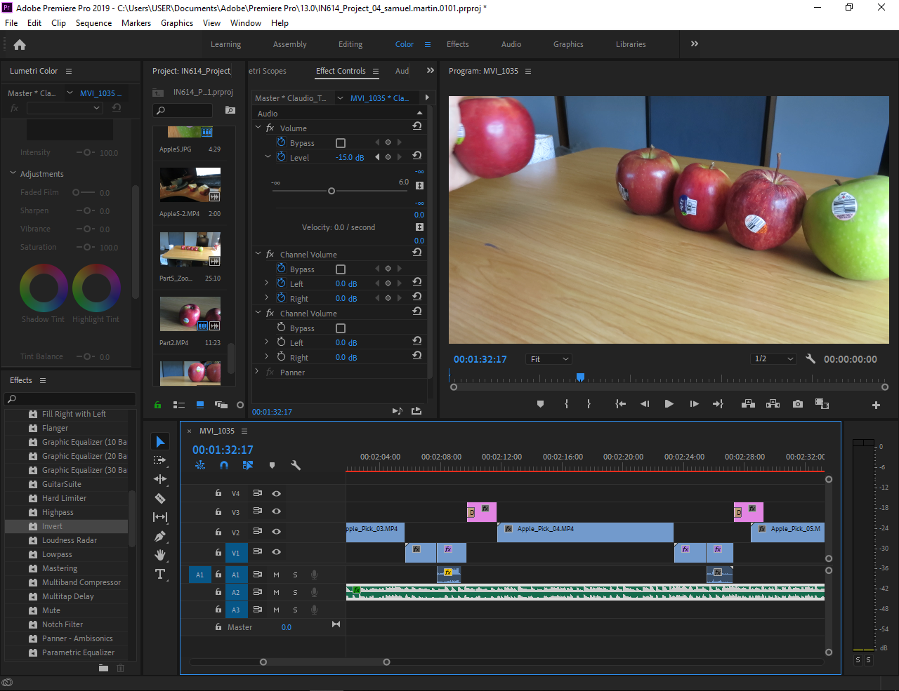

-The tool that I used for filming my video was a Canon SX280 HS Camera
-I used it because I though the video quality might improve by using a camera opposed to a Phone Camera.
-The Program that I used to edit my video was Adobe Premiere Pro 2019
I used this program as it had a nice understandable interface and had all the tools that I needed to properly and efficiently edit my video.
By using Tools such as scene cutting, transition effects, lighting / color effects, music / audio and text features.
-I used:
-Razor Tool - To separate and cut out certain areas of the video that I either did not need or it was not a good enough quality to use.
-Transition Effects - To change video clips without having the footage jump from one place to the other. Also used to end scenes before the next scene. Audio also fades at the end of a scene.
-Text - To display information such as music titles and scores, and it gives the viewer some extra information to view.
I also created a title screen and a moving (bottom to top) credit squence.
-Motion (Position) - To create moving text and panning across an otherwise stationary image.
-Color effects - To show the viewer a certain aspect in more detail. Used when I took a bite out of an apple, there was one apple where I used a blue color when the apple was not tasty to show a cold and damp (No taste) effect.

-Sounds - To increase the impact of a certain scene.
-Background Music - Adds some interest to the video rather than it just being silent.
I wanted some upbeat / calm music to use in the background for my video which is how I came to decide on the music that I did use.
-Video Speed - To speed up / slow down or reverse the flow of a selected clip.
-From the videos that I watched for research, I learned how a review styled video can be presented
There was one style (Used by トイカンTOYKAN) that I particularly liked and I used a similar style / effects in my own video.
The Camera that I used was not perfect & I had no equipment that I could use to sabilise the movement in the scenes.
I took quite a few shots of the apples that did not turn out that well due to lighting and surrounding interferences.
Because I took a lot of footage, I was able to sort through and pick out the good shots and use them in my video.
-I followed a tutorial on 'How to Export HD Video in Premiere Pro for Youtube'.
Link: https://whoismatt.com/hdexportsettings/
This tutorial was very helpful as he explains details on how one should export a video to Youtube.
I was able to export my work into an MP4 file as this is the format that Youtube expected.
I was able to successfully upload my video to Youtube thanks to the tutorial.
The output setting I used were 'Width 1920, Height 1080, Frame rate 29.97, Bitrate 40Mbps, Audio Acc 48000 Hz.'
-I used several folders in order to seperate different parts of the video.
There were three main scenes that I used in the video so I created a folder for each one.
All of the resources used in that scene were put in that folder and divided into Images or Videos or Audio
I gave all of the file names to easily identify them and know where they go in the video.
I left the music track in the scenes folder as there was only one per scene there was no need to create a seperate folder for it.
I created backup files every time a made a significant change. Therefore if I made a large mistake I could just revert back to an older save and continue from there.
Every time I saved I increment the "_01" on the file.
-My main focus was on the apples, where I used different angles and movement to bring attention to the apples.
-
I realised when watching my video that some of the clips near the beginning were too long and repetative so I shorted them and included some extra clips.
I also increased the speed of these clips as they were a bit too slow and the viewers would lose interest without increasing the pace.
Before & then After
-From watching some videos that some other people made I tried to use a similar style that they use and achieve a similar effect that they use.
I used a similar style to トイカンTOYKAN as all of the other reviewers film themselves which is not what I was aiming for.
By using these techniques I was able to make a better video than without them.
-I wanted to make this video enjoyable and interesting to watch.
From watching some videos from the Reference section I found that sound was quite an important factor as all of these people use background music that quietly plays when they are speaking. The music is louder when they are not talking.
I used this in my video, when I started the spoken review section, I decreased the background audio so that the listener can focus on what I am saying.
I put a lot of focus on the apple crunching sound as it can draw the listeners attention.
Work in Progess Scene 1:
Work in Progress Scene 2:
Work in Progress Scene 3:
Work in Progress All Scenes :